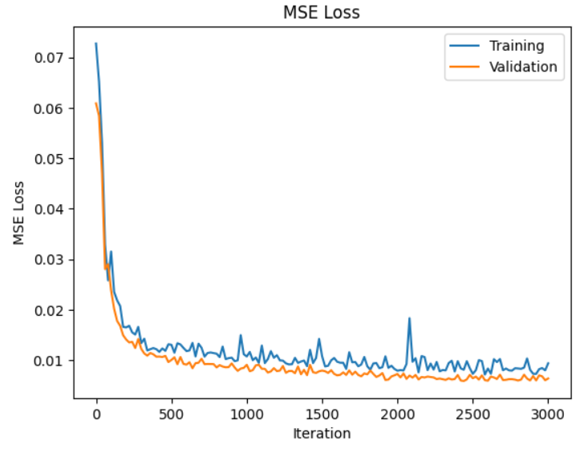

Final Project: NeRF
In this project, we worked with Neural Radiance Fields!
Part 1: Fit a Neural Field to a 2D Image
In this part, I created a multilayer perceptron network with sinusoidal positional encoding to predict the three dimensional RGB pixel colors given the two dimensional pixel coordinate UV. I used the suggested architecture from the project spec, which is visualized below. The sigmoid at the end makes sure that the output is between 0 and 1, which is the valid range for the colors.
I trained this model by using mean squared error as the loss metric, comparing the ground truth image color to the predicted color. Besides that, I visualized the peak signal-to-noise ratio (PSNR).
I started with the following hyperparameters:
-Number of iterations to run for training: 2000
-N (number of pixels to sample at each training iteration): 10k
-Adam optimizer learning rate: 1e-2
-L (max frequency for the positional encoding): 10
The number of channels and the channel size are visible in the diagram above. With that setup, I got the following results. The rightmost image is the original.
 |
Then, I wanted to see how changing L, which controls the maximum frequency for the positional encoding, would affect the training process.
With a lower L = 5, I got the following results. I didn't notice too many visual differences, but the signal to noise ratio doesn't look as stable.
|
 |
With a higher L = 20, I got slightly smoother convergence for the PSNR, but visually nothing dramatic.
|
Then, I wanted to see how the learning rate lr would affect the training process.
With a higher lr=1e-1, I got the following results. I noticed that the results got quite a bit worse (always black), and the model could not converge.
|
With a lower lr=1e-4, I got slower but smoother convergence.
|
Overall, I noticed that changing L didn't drastically impact model results, while choosing an appropriate learning rate is crucial to success.
Finally, I applied the method to another image with the original hyperparameters. I got the following results.
Part 2: Fit a Neural Radiance Field from Multi-view Images
Next, I tried to create a neural radiance field by multi-view calibrated images. I used the given lego dataset, which looks like this, when you visualize all the given camera information and images. We are given the camera-to-world transformation matrix for each camera. Based on this information, we want to do inverse rendering to effectively reconstruct the object depths.
First, I had to implement a couple of helper functions. I wrote functions to be able to transform a point from camera to the world space, convert a pixel coordinate back to the camera coordinate system, and compute the ray origin and ray direction for any pixel uv. In order to transform a point from camera to the world space, I matrix multiplied the transformation matrix with the point. In order to convert a pixel coordinate back to the camera coordinate system, I matrix multiplied the scaled inverse K matrix with the point. Computing the ray origin was simple, since it was just a matrix multiplication between the inverse of the world to camera's rotation matrix and the world to camera's translation vector. In order to compute the ray direction, I normalized the difference between the world coordinate and the origin.
Next, I created a dataloader to be able to sample random pixels from images, like I did in part 1. I precomputed the rays for each pixel location for each camera to speed this up. I also wrote a method to be able to sample points along each ray in order to have samples living in 3D space. During training, these points were not evenly spaced, but instead perturbed a bit. For training, I used 64 points on each ray.
Altogether, the scene was visualized something like this. Each of the images corresponds to a camera view. Each line corresponds to a randomly sampled ray. Each dot corresponds to a sampled point in space.
I followed along with the suggested architecture for creating a model to predict RGB and Density based on the 3D world coordinate and the 3D ray direction vector.
I trained this model by using mean squared error as the loss metric, comparing the ground truth pixel value to the rendered color at each position. On top of that, I computed the peak signal-to-noise ratio (PSNR).
I used the following hyperparameters:
Gradient Steps: 3000
Batch Size: 10k
Adam optimizer learning rate: 5e-4
With this setup, I got the following results.
|  |  |
In the end, this is the video generated from visualizing the image from each test camera position, after 20 minutes of training.
After just 7 minutes of training, there were already reasonable results, as shown below.
Bells and Whistles: Color Background
In order to generate the object with a colored background, I needed to update my volrend function. At the end of the generation, I added in the color * the remaining amount of unaccounted transmittence (how much we should be able to see through the object, to the background) so it would show up as the color instead of nothingness. Here it is, in pink and blue!